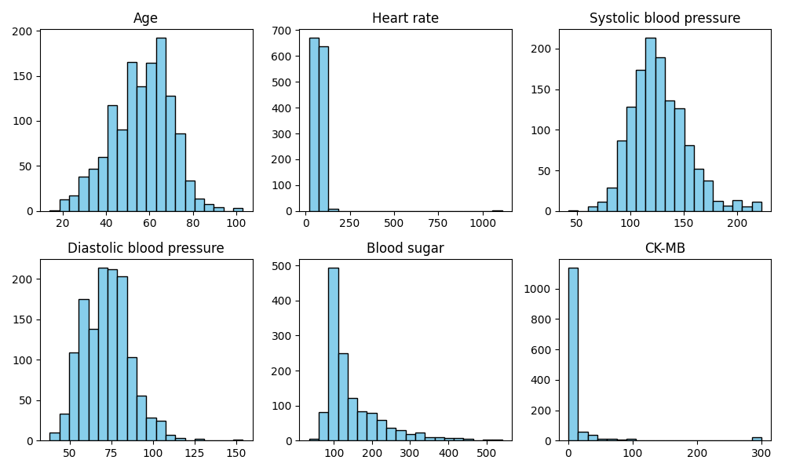
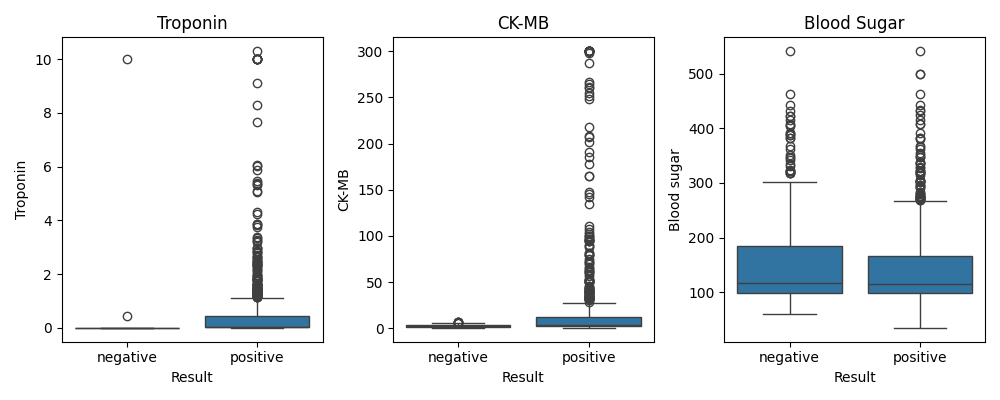
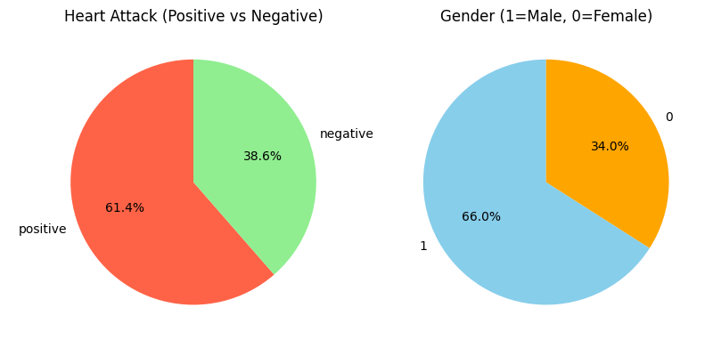
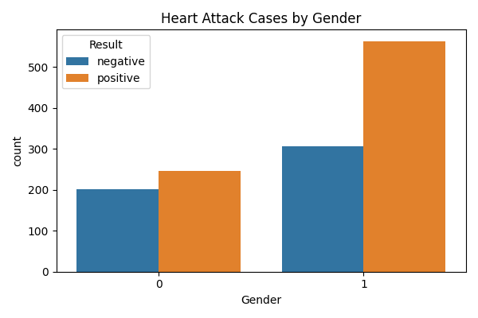
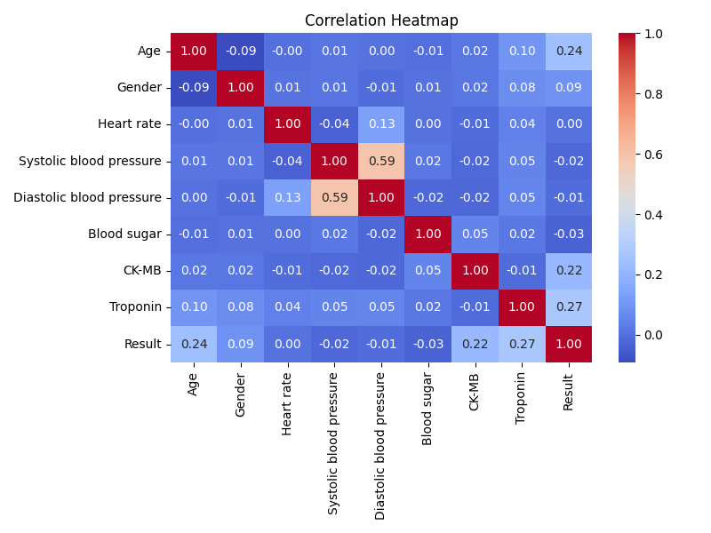

Exploratory Data Analysis Report
Project: Heart Attack Risk Prediction
Course: SYBCA-AI (Sem-III) | Subject: 303 Machine Learning
1. Introduction
This project is about predicting whether a person has a risk of heart attack or not using Machine Learning (Classification). The dataset used is Medicaldataset.csv which contains medical records of 1319 patients.
2. Dataset Details
The dataset has 9 columns in total (8 features and 1 target variable):
| Column Name | Type | Details |
|---|---|---|
| Age | Integer | Patient age (14 to 103 years) |
| Gender | Integer | 1 for Male, 0 for Female |
| Heart rate | Integer | Heart beats per minute (bpm) |
| Systolic blood pressure | Integer | Blood pressure high value (mmHg) |
| Diastolic blood pressure | Integer | Blood pressure low value (mmHg) |
| Blood sugar | Float | Glucose level in blood (mg/dL) |
| CK-MB | Float | Cardiac enzyme level |
| Troponin | Float | Heart muscle protein level |
| Result | String | Target: positive (heart attack) / negative (normal) |
3. Data Check and Summary
- Total rows: 1319
- Total columns: 9
- Missing / Null values: 0 (Clean dataset)
- Duplicate rows: 0
- Target counts: positive = 810 (61.4%), negative = 509 (38.6%)
Summary Statistics:
| Feature | Mean | Min | Max |
|---|---|---|---|
| Age | 56.19 | 14 | 103 |
| Heart rate | 78.34 | 20 | 1111 |
| Systolic blood pressure | 127.17 | 42 | 223 |
| Diastolic blood pressure | 72.27 | 38 | 154 |
| Blood sugar | 146.63 | 35.0 | 541.0 |
| CK-MB | 15.27 | 0.32 | 300.0 |
| Troponin | 0.36 | 0.001 | 10.3 |
4. Outlier Handling
We checked for outliers using the IQR method (Q3 - Q1). Some features like Troponin and CK-MB have high values because during a heart attack, cardiac markers increase a lot. So instead of deleting these rows, we capped the values at 1st and 99th percentiles.
5. EDA Visualizations
1. Histogram of Features

This graph shows the frequency distribution of all the numeric columns in our dataset.
2. Box Plot (Biomarkers vs Result)

This plot shows that patients with positive heart attack have higher Troponin and CK-MB values.
3. Pie Chart (Result and Gender)

Shows the proportion of heart attack positive vs negative cases, and male vs female patients.
4. Bar Chart

Shows the count of positive and negative heart attack cases across male and female patients.
5. Correlation Heatmap

Correlation matrix shows the relationship between all columns. Troponin and CK-MB have the highest correlation with Result.
6. Conclusion
- Troponin and CK-MB are the most important features for heart attack prediction.
- Age and Blood Pressure also contribute to higher heart risk.
- The dataset has no missing values and was prepared properly for machine learning classification.